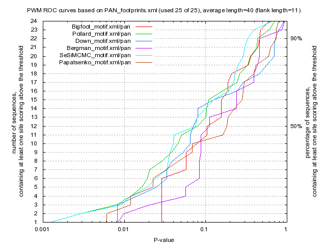

Kulakovskiy I.V., Favorov A.F., Makeev V.J. (2009) Motif discovery and motif finding from genome-mapped DNase footprint data. Bioinformatics 25(18): 2318-2325.
<up> DMMPMM motif PAN comparison [dmmpmm_compare_html]
|  |
motif alignment
motif similarity
|
Bigfoot |
Pollard |
Down |
Bergman |
SeSiMCMC |
Papatsenko |
| Bigfoot |
1.0 |
0.511 |
0.1293 |
0.1173 |
0.6236 |
0.4794 |
| Pollard |
0.511 |
1.0 |
0.0787 |
0.1994 |
0.7774 |
0.4219 |
| Down |
0.1293 |
0.0787 |
1.0 |
0.0694 |
0.1074 |
0.0897 |
| Bergman |
0.1173 |
0.1994 |
0.0694 |
1.0 |
0.1873 |
0.1768 |
| SeSiMCMC |
0.6236 |
0.7774 |
0.1074 |
0.1873 |
1.0 |
0.4769 |
| Papatsenko |
0.4794 |
0.4219 |
0.0897 |
0.1768 |
0.4769 |
1.0 |
|